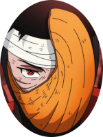

Minhas redes sociais
Quem sou eu?

Meu nome é Obito Uchiha, Eu não sou ninguém e tampouco quero ser alguém, já fui conhecido como Madara Uchiha, Tobi, Obito, etc.
Minhas frases Favoritas
- Talvez, nesse mundo aqueles que quebram as regras sejam considerados Lixo...
Mas quer saber, aqueles que abandonam seus amigos são piores que lixo.
- Eu estou no inferno.
- Vou criar um mundo onde ela ainda exista
- Quando uma pessoa conhece o amor... Ela também corre o risco de conhecer o ódio.
- Se existe vencedor também à perdedor, vivemos num inferno nele sempre haverá dor.
- Você provavelmente vai sofrer de novo daqui em diante... Mas não mude, continue seguindo o seu caminho. Você me disse que você nunca volta atrás na sua palavra... que este é o seu jeito ninja. Certo? Naruto, torne-se Hogake, custe o que custar!
- Kakashi eu irei me encontrar com a Rin agora. Não ouse chegar lá tão cedo!
Como falar comigo?
Bom.. eu sou um personagem de anime então não tenho redes sociais, mas você pode me ver ou conhecer mais sobre mim nesses sites:
- /Amino - Site Sobre Animes em geral.
- /crunchyroll - Aqui Você pode acompanhar a história do meu mano Naruto, Kakashi e conhecer um pouco mais sobre como quase deixei o mundo inteiro em um Genjutsu